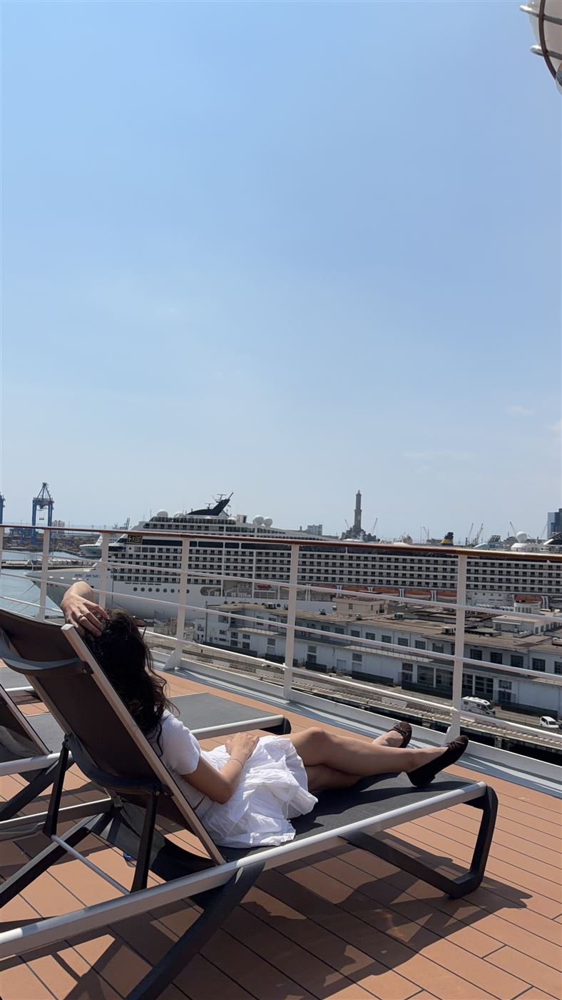

Рим · круиз · Канарские острова
Возвращение в лето
Из рождественского Рима — к пляжам и океану Тенерифе. 4–15 декабря 2026, с сопровождением нашей команды.
Два сезона за одну поездку
Из зимы — в лето
Декабрьская Европа и канарское солнце в одном маршруте
Мы прилетаем в декабрьский Рим: рождественские огни, праздничная ярмарка на площади Навона, ёлка у собора Святого Петра. А через несколько дней — пальмы, тёплый океан, пляжи и сафари на верблюдах по золотым дюнам. Между зимой и летом — шесть дней отдыха на борту лайнера.
Что нас ждёт


Почему этот тур
Без утомительных переездов
Авиаперелёт в Рим, а после — путешествие на лайнере MSC Cruises без необходимости менять отели
Вильнюс — Рим самолётом
Быстрый перелёт без многочасовых очередей на границе — выезжаете утром и уже вечером гуляете по Риму
6 дней на круизе «всё включено»
Шведский стол, рестораны à la carte, бассейны, спа, детские клубы и спорт-центр — всё на борту MSC Fantasia
Отель 5★ на Тенерифе
У океана, с бассейнами и спа, полупансион: завтраки и ужины включены. Недалеко пляжи с вулканическим песком, бирюзовые лагуны и огромный зоопарк
Отель 4★ в Риме у метро
Метро в 300 метрах — линия A идёт к Испанской лестнице и Ватикану. Завтраки включены
Сопровождение нашей команды
Мы рядом на всём маршруте: от вылета из Вильнюса до посадки на рейс домой
Три формата одного путешествия
Выберите свой формат
От короткого круиза до полной программы — под ваш отпуск и бюджет
Круизный
Для тех, кому главное — море и лайнер
- 1 ночь в Риме, отель 4★ с завтраком
- Круиз «всё включено», 6 ночей
- Свободное время в Риме и на Тенерифе
- Экскурсии по желанию*
Бесконечное лето
Вся программа и свобода планировать дни самому
- 3 ночи в Риме, отель 4★ с завтраком
- Круиз «всё включено», 6 ночей
- 2 ночи на Тенерифе, отель 5★ с завтраками и ужинами
- Свободное время в Риме и на Тенерифе
- Экскурсии по желанию*
Лето под ключ
Экскурсии и входные билеты уже включены
- 3 ночи в Риме, отель 4★ с завтраком
- Экскурсии по Риму и Ватикану
- Круиз «всё включено», 6 ночей
- 2 ночи на Тенерифе, отель 5★ с завтраками и ужинами
- Экскурсия по восточной части острова «Неизведанный Тенерифе», посещение Национального парка Тейде и Лоро-парка с билетами
* Дополнительные экскурсии оплачиваются отдельно — подробнее в разделе «Групповые экскурсии».
Во всех форматах
Путешествие, собранное под вас
Задержаться в Риме, добавить дни у океана, изменить даты — мы с радостью подстроим любой формат под ваши планы. Просто расскажите о них менеджеру.
MSC Fantasia · 7–13 декабря
Каюты и апгрейд
Выберите, каким будет ваш дом на время круиза
Стоимость тура рассчитана на внутреннюю каюту. Возможен бесплатный апгрейд — повышение категории каюты по сравнению с изначальной бронью.
Всё о круизе: что на борту и маршрут →Лайнер MSC Fantasia изнутри — официальный видеообзор MSC Cruises
Листайте вбок →

Внутренняя каюта
~17 м²Уютная каюта без окна — для тех, кто проводит день на палубах и на берегу

Каюта с окном
~18 м²Дневной свет и вид на океан прямо из каюты
Каюта с балконом
~19 м² + балкон ~4 м²Утренний кофе на собственном балконе и закаты над Атлантикой

Сьют MSC Yacht Club
от ~23 м², с балконом«Корабль в корабле»: 71 сьют, консьерж-служба, приватные бар, лаунж, бассейн и джакузи, отдельный вход в спа
12 дней · 11 ночей
Маршрут по дням
Вильнюс → Рим → круиз по Атлантике → Канарские острова → Варшава
4 декабряпятницаЗдравствуй, Рим!
Утренний рейс из Вильнюса — и уже в полдень вы в Вечном городе. Трансфер и заселение в отель 4★ у метро (ориентировочно Mercure Roma Cinecittà) — всё вместе с нашей командой. До станции 300 метров, а линия A без пересадок довезёт до центра.
Вечер — для первого знакомства с городом: рождественские огни, праздничная ярмарка на площади Навона, ёлка у собора Святого Петра.
5 декабрясубботаРим
Свободный день в Риме — каким он будет, решаете вы. Город в рождественском убранстве: гуляйте в своём ритме по праздничным улицам и площадям, где по одному кварталу можно читать историю Европы.
По желанию можно присоединиться к экскурсии «Музеи Ватикана + Сикстинская капелла»*.
6 декабрявоскресеньеРим
Ещё один день в Вечном городе — для прогулок и новых открытий. Исторический центр компактен: главные места — в пределах пешей прогулки или пары остановок метро.
По желанию можно присоединиться к обзорной экскурсии по Риму с посещением Колизея, Форума, Капитолия и Трастевере*.
7 декабряпонедельникПосадка на лайнер
После завтрака — переезд в порт Чивитавеккья, дорога займёт 1–1,5 часа. Наша команда поможет с посадкой — и вот вы на борту MSC Fantasia: заселение в каюту, первый ужин, вечерняя палуба.
Около 18:00 лайнер отходит от причала. Впереди шесть ночей «всё включено» и путь из зимы в лето.
8–10 декабря3 дняТри дня в открытом океане
Самая беззаботная часть путешествия: не нужно собирать чемоданы и никуда спешить. Вы засыпаете в каюте, а просыпаетесь всё ближе к солнцу.
Бассейны и джакузи на открытых палубах, спа, спорт-центр, детские клубы. Завтраки, обеды и ужины — шведский стол, а вечером — ужин с обслуживанием в ресторане à la carte.
11 декабряпятницаГран-Канария
Лайнер швартуется прямо в центре Лас-Пальмаса — стоянка около 09:00–20:00, целый день на острове. Самый большой город Канар и настоящий курорт: за день можно успеть и старый город, и пляж.
По желанию можно присоединиться к экскурсии по историческому центру Вегета с посещением океанариума*.
12 декабрясубботаЛа-Пальма
Свободный день на самом зелёном острове маршрута: вулканы, леса и одно из самых чистых небес в мире. Колониальный старый город начинается в нескольких минутах ходьбы от причала.
13 декабрявоскресеньеТенерифе
Утром лайнер приходит в Санта-Крус-де-Тенерифе. Высадка, переезд на север острова, в курортный Пуэрто-де-ла-Крус, и заселение в отель 5★ на берегу Атлантики (ориентировочно Best Semiramis): бассейны, спа, терраса на крыше, завтраки и ужины включены. Остаток дня — у океана.
По желанию можно присоединиться к экскурсии «Неизведанный Тенерифе»: дикие берега, горы Анага и пляж с песком из Сахары*.
14 декабряпонедельникОстров вечной весны
Утром — снег на вершине вулкана, днём — океан и пляж. Свободный день на Тенерифе: бассейн с видом на океан, пляжи с вулканическим песком, прогулки по Пуэрто-де-ла-Крус.
По желанию можно присоединиться к экскурсии на вулкан Тейде — высшую точку Испании — и в Лоро-парк*.
15 декабрявторникВылет домой
Свободное утро: завтрак и последний час у бассейна с видом на океан. Трансфер в аэропорт и вылет Тенерифе → Варшава.
Наша команда рядом до самой посадки на рейс. Вы возвращаетесь в декабрь — с летом внутри.
* Групповые экскурсии — по желанию, проводятся при наборе группы от 20 человек. Все экскурсии →
Программа ориентировочная: время стоянок может уточняться.


Сопровождение нашей команды
Мы рядом на всём маршруте
От вылета из Вильнюса до вылета с Тенерифе с вами будет наш представитель. Вам не нужно разбираться с трансферами, портом и заселением — вы просто отдыхаете.
- Поможем с визой ещё до поездки
- Поможем с заселением в отели в Риме и на Тенерифе
- Проведём через посадку на лайнер
- Организуем трансферы
- Ответим на любые вопросы в пути
На фото — наша команда в круизе
Смотрите сами
Куда мы едем
Рим и Канарские острова — пока в видео, в декабре — вживую
Подробнее о поездке
Что посмотреть и где жить
Достопримечательности, цены билетов и отели — на отдельных страницах


Визовая поддержка
Поможем с визой
Испанский шенген для туристов без действующей визы
Нет действующей шенгенской визы — не повод отказываться от поездки. Мы поможем оформить испанскую визу: подготовим документы по туру, запишем на подачу и будем на связи на каждом шаге. Документы подаются в визовый центр Испании в Минске.
Консультация
Проверим паспорт и составим список документов под вашу ситуацию
Пакет документов
Поможем с анкетой и подготовим бронь отелей, круиза и авиабилетов для консульства
Запись на подачу
Запишем вас в визовый центр Испании в Минске — без записи документы не принимают
Подача и биометрия
Вы лично подаёте документы и сдаёте отпечатки пальцев, а мы следим за решением
Частые вопросы
Отвечаем заранее
Что входит в стоимость?
Во всех форматах: авиаперелёт Вильнюс — Рим и Тенерифе — Варшава, круиз MSC Fantasia «всё включено», отели 4★ в Риме с завтраком и 5★ на Тенерифе с завтраком и ужином, остановки на Гран-Канарии и Ла-Пальме и сопровождение нашей команды. В формате «Лето под ключ» включены ещё экскурсии и входные билеты. Состав форматов — в разделе «Форматы и цены».
У меня нет шенгенской визы. Успею?
Поможем оформить испанскую визу: проверим паспорт, подготовим документы и бронь по туру, запишем на подачу в визовый центр Испании в Минске. Начинайте как можно раньше — запись бывает загружена, а консульству нужно время на рассмотрение. Подробнее о визе и документах.
Будут ли ночные переезды?
Ни одного. В Рим летим самолётом из Вильнюса, дальше лайнер сам везёт вас к Канарам — отели менять не нужно, чемоданы собирать тоже.
Как кормят?
На лайнере — «всё включено»: завтраки, обеды и ужины в формате шведского стола и ужины с обслуживанием в ресторанах à la carte. В Риме — завтраки в отеле, на Тенерифе — полупансион: завтраки и ужины.
В какой каюте мы поплывём?
Стоимость тура рассчитана на внутреннюю каюту. Возможен бесплатный апгрейд — повышение категории каюты. Стоимость апгрейда до каюты с окном, с балконом или сьюта Yacht Club рассчитает менеджер.
Экскурсии обязательны?
Нет. Все достопримечательности можно посмотреть самостоятельно — мы указали цены входных билетов. Если наберётся 20 желающих, организуем групповые экскурсии с гидом. В формате «Лето под ключ» экскурсии уже включены. Список экскурсий.
Кто будет с нами в поездке?
От вылета из Вильнюса до вылета с Тенерифе с вами будет наш представитель: поможет с заселением, посадкой на лайнер, трансферами и ответит на любые вопросы в пути.
Можно продлить отдых или изменить даты?
Да. Задержаться в Риме, добавить дни у океана, изменить даты — подстроим любой формат под ваши планы. Просто расскажите о них менеджеру.
Какая погода в декабре?
В Риме днём 10–14 °C, рождественская атмосфера. На Канарах воздух 21–23 °C, вода 20–21 °C.
Отели точно будут эти?
Отели указаны ориентировочно. При бронировании возможна замена на отель аналогичной категории с сопоставимым расположением.
Не нашли ответ? Напишите нам в Telegram или Viber, или позвоните: +375 (44) 788-44-22.
Заявка на тур
Забронируйте место в группе
Оставьте телефон — менеджер перезвонит, ответит на вопросы, рассчитает апгрейд каюты и поможет с визой.